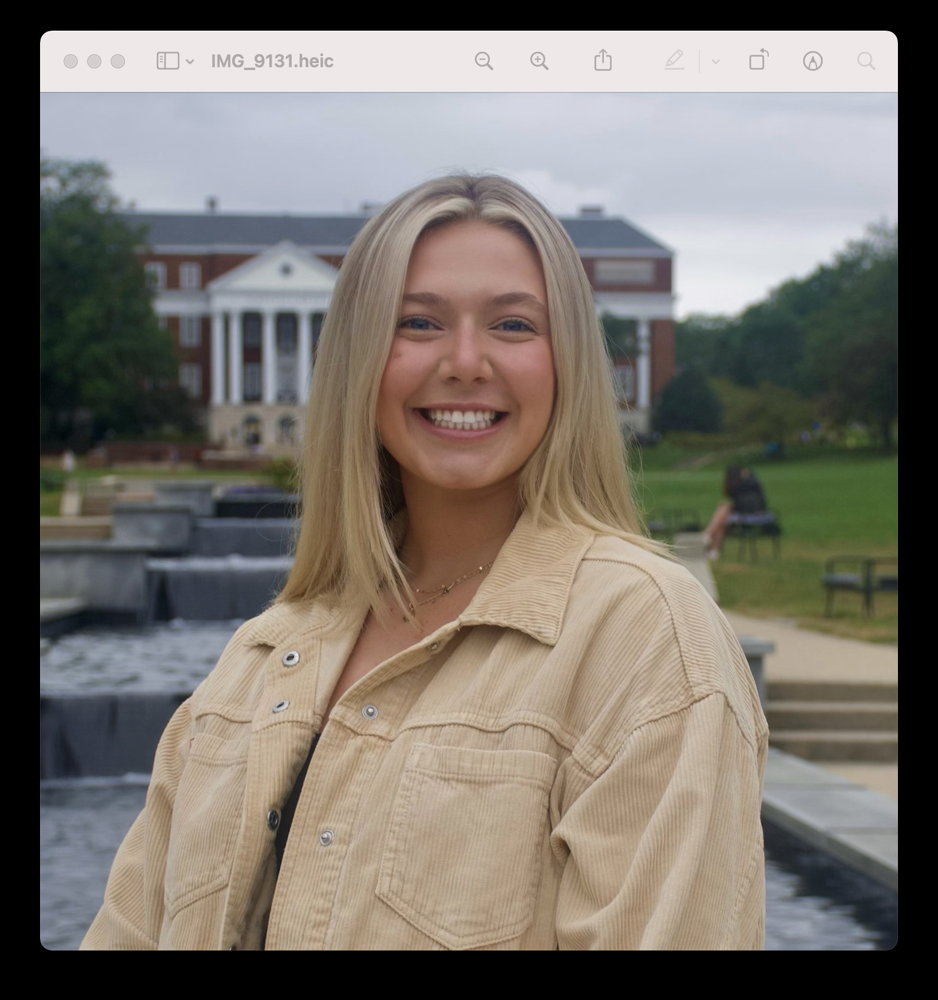

Kylee Mills
Student

Experience
Campus Representative
Victoria's Secret PINK
July 2020-Present
- Manage UMD’s PINK social media accounts
- Lead a campus team made up of five people
- Hold monthly meetings with our team to shoot content, create graphics, and plan events for our community
Vice President of Public Relations
University of Maryland's Panhellenic Association
January 2021-Present
- Manage PHA's social media platforms
- Create content
- Manage the website
- Support all 16 chapter's PR chairs
- Approve chapter's apparel
Vice President of Recruitment
University of Maryland's Panhellenic Association
December 2021-Present
- Plan, promote, and facilitate 2023 primary recruitment for the Panhellenic Association at UMD
- Oversee the 16 Panhellenic chapters' recruitment efforts
- Assist chapters during informal recruitment
- Meet with recruitment chairs from each chapter to discuss and implement procedures for formal and informal recruitment
Freelance Social Media
BBQ Bueno/The Station Steak & Grille
May 2016-December 2021
- Shoot content
- Make graphics
- Manage company accounts
- Help to understand analytics
Education
- Expected to graduate in May of 2023 with a bachelor’s degree in Journalism from the Philip Merrill College of Journalism at the University of Maryland
Skills
- Leadership
- Self-motivated
- Organized
- Adobe Softwares
- Wix
- Canva
- Social Media Platforms